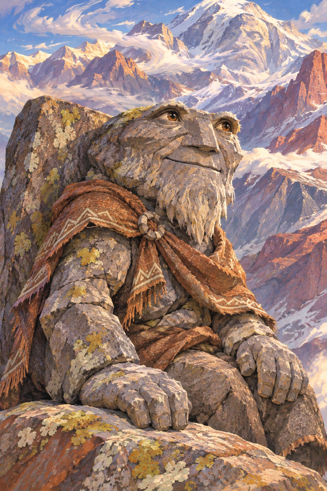

Провести обе стопы через Разомкнутое кольцо: обойти Ломана, лежащего у главной постановки Аремы, вторым местом и замершей долей, и узнать у каждой горы, согласна ли она на нижний рисунок.

Век ПлоскийРуна Сторона СветаНеми Длинная ЧертаЛоманАремаТорвен
Повороты сюжета в этот вечер
Посеять сегодня
Из пыли первого шага. Арема в кольце: «Он лежит… там, где я поставила бы. Он знает… мои шаги».
Трещина под кварцевой полосой. Торвен в кольце: «Корни есть. Если она попросит низко — сяду». Он считает нижнюю свадьбу настоящей.
Разомкнутое кольцо лежит между ногами гор, как брошенный на камень обруч: почти круглая площадка, разомкнутая с двух сторон. Западный выход смотрит вниз, к Кругу двух подножий, восточный — к полке у разлома, а посередине поднимается россыпь плит, островок по пояс человеку. Ходоки говорят, что в старые века здесь танцевали холмы и камни по краю — их следы, оставленные на память. Ветер ходит по краю, как по краю чаши, и сухо шуршит в щелях между плитами. Век Плоский раскладывает на краю камешки фигурой «два шага навстречу» и щурится верхним краем лица: «Ночью тут прополз длинный низкий камень». Над кольцом Арема и Торвен медленно поворачивают лица друг к другу, и ленты на обоих склонах разом вздрагивают; на восточном краю Сафф поднимает руку в полосатом рукаве. Снизу, по западной тропе, кто-то поднимается к кольцу.
Подготовка и роли
Ловушка вечера: Ломан лежит низко за центральной россыпью, у главной постановки стопы Аремы. Обход — только замершая доля вместе со второй постановкой (западный выход); ложный жест с вечера 5 не работает. Постановка Торвена (восточная половина кольца) разведана без дела: тот, у кого кварцевая щепка (Сева или Сафф на восточной стороне), смотрит на неё. Точка общей доли — плоская спина Века на северном краю; кто там стоит, не может быть у постановки. Результаты: сорвана +1 → украдена +1 и Л +1 → ушиблена +2 → села сама 0 → точно −1; общая доля −1 (при Р 12–17 — две ленты). Нижний рисунок расстояние не меняет, только отметка в журнале; Арема соглашается, только если знает о трещине или Л 6+. Слова Века о веке неподвижности — третий довод для зова Ломана в финале; если стол их не слышал, их скажет Ирдо в вечер 7. Если в вечер 5 стопу Торвена украли, на западном выходе сидит сколыш: согнать делом с Веком (без броска) или ставить стопу в другом месте. Ориентиры: точный стол 2→−1, Л 2; средний 13→11, Л 4; неудачный 16→16, Л 7→8. Рассказ Века о ночном «низком камне» — запасной путь к походке. Напасть на Ломана — как в вечер 4: Л +1. Лица гор — одна фраза после вступления, по дорожке: Р 5 и ниже — ленты на обоих склонах полощутся в одну сторону; 6–11 — гул одной горы слышен в подошвах с другой стороны кольца; 12–17 — горы видят друг друга, слова передаёт лентой Сафф; 18+ — лица смотрят в разные долины.
Вечер Нивы (если за столом; иначе Севы): проходит с Руной нижний рисунок и придумывает знак общей доли на спине Века.
Сева: замершая доля — горизонтальная лента над россыпью, удержанная в перекрестье теней.
Огняна держит западный выход и вовремя говорит «стой»; Яр срисовывает низкую фигуру Ломана и обе постановки.
Сцена 1 · 75 минут
Век и Руна
Век Плоский сидит на краю кольца, и камешки теперь лежат у него прямо на широкой плоской спине: он заводит руку назад и перекладывает их не глядя, как хозяйка, которая знает свою кухню на ощупь. С западного выхода, снизу, доносится мерный стук посоха о камень: раз, два, три, пауза. Поднимается женщина в зелёном плаще с крупными белыми нашивками. У самого выхода она останавливается, оглядывается назад, на тропу, по которой пришла, и только потом смотрит на вас. «Руна, ходок нижних путей, — говорит она. — Сначала — как вернуться. Потом — куда идти».
Век Плоский раскладывает камешки на своей плоской спине: «Низкий камень стоит сам. Высокий стоит на ветре». С запада приходит Руна, отмеряя шаги посохом: «Сначала — как вернуться. Потом — куда идти. Западный выход ведёт вниз, в Круг двух подножий». Над кольцом Арема назначает время: «Когда Век… уберёт последний камешек… я понесу ногу». Век не торопится: перекладывает камешек, щурится, перекладывает обратно. И, не поднимая глаз: «После свадьбы они встанут. На век. Ни осыпи, ни шага. Всё, что стоит на чужом ходу, тогда ляжет. А камню, который стоит сам, — ничего. Мне — ничего». Торвен с востока: «Корни… есть. Если она… попросит низко — сяду». Арема долго молчит, потом: «Он сел бы… на корни. Ради меня. Я… знаю». Дел пять, тени — на три (при 6–8 игроках на четыре): обойти россыпь; договориться с Аремой о замершей доле; пройти с Руной нижний рисунок; позвать Ломана пройтись с Веком; согнать сколыша, если он сидит на западном выходе. Из-за россыпи тянет свистом — только справа.
Выборы — и что будет дальше
Обойти россыпь с запада («Разрыв круга»): увидеть, где лежит Ломан и где запасная постановка. На склоне: плиты россыпи шатаются под ногой, и каждый шорох слышен за ней. Век шепчет, не двигаясь: «Медленно. Как я».
Плиты россыпи шатаются под ногой, и каждый шорох слышен за ней. Век шепчет, не двигаясь: «Медленно. Как я». За россыпью лежит Ломан — у самой главной постановки Аремы, длинный, низкий, с плитой поперёк плеч. А дальше, у западного выхода, видна запасная постановка, о которой он не знает. Руна, если она рядом, говорит размеренно, будто отмеряет шаги: «Путь назад — через россыпь. А вот и вторая дверь». Обход пройден. Карта стала полной.
Договориться с Аремой о замершей доле: горизонтальная лента над россыпью, потом поднятая на западном выходе. На склоне: чтобы она увидела форму ленты, надо встать на верхний край кольца, на самый ветер. Арема: «Держать ногу над ним?.. Могу… пока считаю до ста камней».
На верхнем краю кольца, на самом ветру, ходок показывает Ареме ленты: горизонтальную, потом поднятую. Гора долго смотрит, потом гудит: «Держать ногу над ним?.. Могу… пока считаю до ста камней». Договор простой: замри над россыпью, потом иди к западному выходу. Арема пробует новое слово: «Замершая… доля. Красиво. Как танец… в котором стоят».
Пройти с Руной две дуги в Кругу двух подножий («Низкий рисунок») и спросить каждую гору отдельно. На склоне: дуги выложены по склону к кругу, идти по ним надо шаг в шаг, и Руна поправляет каждый. Руна: «Круг закроется. Моя дорога. Ничего: я найду другую».
Дуги выложены по склону к кругу, идти по ним надо шаг в шаг, и Руна поправляет каждый. «Круг закроется, — говорит она. — Моя дорога. Ничего: найду другую». Каждую гору спрашивают отдельно. Торвен отвечает сразу: «Корни есть. Если она попросит — сяду». Арема молчит долго: «Он сел бы… ради меня. Я знаю». Нижний рисунок пройден и предложен. Решать — им.
Позвать Ломана пройтись низко вместе с Веком, без насмешки. На склоне: звать надо, подойдя к россыпи на расстояние его ладони. Век: «Пройдёшься со мной низко? Такого шага в Венце никто не видел». Ломан из-за россыпи хрипит: «Посмотрим. После свадьбы» — или, если смеялись: «Смотрите. Всё равно встану».
Ходок подходит к россыпи на расстояние его ладони, и Век рядом говорит: «Пройдёшься со мной низко? Такого шага в Венце никто не видел». Из-за россыпи долго ничего, только свист справа. Потом хрип: «Посмотрим. После свадьбы». Если над ним раньше смеялись: «Смотрите. Всё равно встану». Приглашение прозвучало без насмешки — одно из двух условий, при которых он однажды сам отпустит чужое.
Согнать сколыша с западного выхода (только если стопу Торвена украли в вечер 5). На склоне: сколыш притворяется частью выхода и не шевелится. Век тычет в него пальцем: «Это не я. И не кольцо».
Сколыш притворяется частью выхода и не шевелится, пока Век не тычет в него пальцем: «Это не я. И не кольцо». Каменная тварь вздрагивает, щёлкает и уползает в россыпь, ворча на ходоков. Западный выход свободен. Броска не понадобилось: хватило того, кто знает, какие камни тут настоящие. Запасная постановка Аремы снова чиста.
Проверка и путь без броска
Обход россыпи — без броска, постановки открыты («Разрыв круга»), Век выдаёт «Записка Века». Скрытность Сл 12 — Ломан не понял, что его видели. Провал: он шипит «Смотрите. Всё равно встану» и ложится плотнее — в сцене 2 горизонтальную ленту держать с помехой (двое вместе — без броска, как всегда). Договор о замершей доле — без броска. Нижний рисунок — ответы гор словами. Торвен соглашается сразу. Арема говорит «да», только если знает о трещине Торвена (о ней можно спросить Торвена здесь же: «чем опасен удар?») или если Л 6 и выше: «Плечи вниз… Верхняя дорога закроется… Да». Иначе: «Низко?.. Я сто лет шла… чтобы высоко. Нет. Пока… нет» — спросить снова можно в вечер 7. Обе сказали «да» — Руна отдаёт «Две дуги Руны», отметь в журнале «нижний рисунок согласован», выдай «Нижний рисунок»; расстояние не меняется. Зов с Веком без насмешки — флажок «собственный шаг предложен». Сколыш — согнать делом с Веком без броска. Седьмой игрок (при 7 за столом), своё дело: с Неми на западном краю считать тень — в перекрестье теней горизонтальную ленту держат без второй проверки.
Если не получилось
Если не успели обойти россыпь, Век сам показывает выходы рукой и отдаёт «Записка Века», но вторую постановку придётся проверять ногами уже в сцене 2. Если не успели в Круг двух подножий или Арема сказала «нет», Руна в вечер 7 сама принесёт дуги к подножию плеча. Если над Ломаном посмеялись, он злится: отметить Л +1 прямо сейчас, до вечера 8 он не слушает смеявшихся.
Сцена 2 · 75 минут
Две двери
Обе стопы поднимаются разом, с двух сторон, и кольцо оказывается между ними, как монета между ладонями. Склон кренится, небо поворачивается вместе с плечом, ветер кружит в чаше всё быстрее и поднимает с площадки мелкий щебень. Две огромные тени ползут к россыпи плит посередине, каждая со своей стороны. Камешки Века на краю вздрагивают и катятся, но он ловит их ладонью, один за другим, и ни одного не роняет. С западного края звенит голос Неми: она считает плиты вслух. За россыпью что-то низкое и длинное шевелится и замирает.
Обе стопы поднимаются с двух сторон. Склон под ходоками кренится так, что небо поворачивается вместе с плечом, ветер кружит в чаше, тени ног ползут к россыпи. Неми на западном краю считает вслух: «Запад, третья плита от россыпи, две ладони от края. Тень идёт чуть быстрее, чем я думала». Арема гудит в подошвах: «Он лежит… там, где я поставила бы. Он знает… мои шаги». За россыпью шевелится низкая фигура, Ломан хрипит со свистом в швах: «Не смотрите. Внизу я… длинный». Перенос. И посреди переноса тени двух стоп перекрещиваются над кольцом, и обе горы на вдох замирают — смотрят друг на друга сквозь собственные тени. Торвен тихо: «Она… красивая. Сверху это… особенно видно». Горизонтальную ленту надо держать ещё один вдох. Если держат, Ломан рвётся встать: «Сейчас… сейчас встану…» Правое колено складывается со свистом, стопа уходит к западному выходу, и на четырёх опорах он не успевает. Торвен с востока: «Вижу… ногу. В щепку… показали. Сажусь». Век на северном краю подставляет плоскую спину: «Лента наверх. Я не двинусь. Я не дверь и не замок». Арема, опуская ногу: «Держу… девяносто девять… сто. Ставлю».
Выборы — и что будет дальше
Замершая доля и вторая постановка вместе: горизонтальная лента над россыпью, потом поднятая на западном выходе.
Горизонтальная лента над россыпью — и стопа Аремы замирает, неподвижная, как облако. Ломан под ней рвётся встать: «Сейчас… сейчас встану…» Правое колено складывается со свистом. Потом — поднятая лента на западном выходе, и стопа уходит туда, ко второй постановке. На четырёх опорах он не успевает. «Держу… девяносто девять… сто. Ставлю», — гудит Арема. И ставит туда, где его нет.
Держать ленту ещё один вдох, пока горы смотрят друг на друга; второй рядом держит вместе.
Тени двух стоп перекрещиваются над кольцом, и горы на вдох замирают — смотрят друг на друга. «Она… красивая, — тихо говорит Торвен. — Сверху это… особенно видно». Ленту держат вдвоём, ещё один вдох, ещё один, хотя ветер рвёт её из рук. Ломан внизу рвётся встать и не может. Горы смотрят, пока смотрится. Потом стопы опускаются, каждая на своё место.
Только вторая постановка, без замершей доли — или только замершая доля, без второй постановки.
Половина приёма — и Ломан успевает на половину. Если только вторая постановка, он видит, куда уходит стопа, и переползает следом на четырёх опорах: один раз за шаг он это может. Если только замершая доля, стопа висит над ним, но опускаться ей некуда, кроме как к нему. «Ещё немного… — хрипит он. — Ещё…» Полный приём требовал обеих половин.
Сложенная лента: остановить стопу Аремы.
Лента складывается, и Арема замирает, потом уводит стопу назад: «Не сейчас… Он слишком близко». Ломан остаётся у главной постановки, низкий, ни с чем. Расстояние стало больше на пролёт. «Это ничего, — говорит Арема. — Сто лет ждала… ещё вечер подожду». Торвен через кольцо гудит согласно. Иногда лучший шаг — тот, которого не сделали.
Подать общий знак с плоской спины Века, а не стоять у постановки.
Век подставляет плоскую спину, и ходок встаёт на неё с общей лентой. «Лента наверх. Я не двинусь. Я не дверь и не замок». С высоты каменного человека знак видят обе горы, и стопы садятся разом. Постановку без ходока держит лента, воткнутая в щель. Век стоит неподвижно до последнего гула. Держит, как скала, и Век, будто услышав мысль, отвечает сам: «Я и есть скала».
Проверка и путь без броска
Подъём: Сила (Атлетика) Сл 12; провал — сползти на нижний уступ без вреда и пропустить следующую фазу; без броска — верёвка или пятка, оттуда знак не подать. Горизонтальная лента на ветру: Ловкость Сл 12 (с помехой, если Ломан понял, что его видели); без броска — двое держат её вместе. Перекрестье теней: ленту держат ещё один вдох — вторая такая же проверка, или двое вместе без броска. Провал — лента дрогнула, и Арема ждёт голоса: крикнуть «стой» или вести дальше без замершей доли («украдена»). Неразведанная постановка: Мудрость (Внимательность) Сл 13 с носка; без броска — сложить ленту. Результаты, первое подходящее сверху: сорвана +1 → украдена +1 и Л +1 → ушиблена +2 → села сама 0 → точно −1. Стопа Аремы: замершая доля и вторая постановка — «точно»; только вторая — «украдена»; только замершая — стопу приходится вернуть, «сорвана». Стопа Торвена без ловушки: тот, у кого щепка, смотрит на восточную половину — «точно». Общая доля −1: обе «точно», знаки согласованы, на спине Века поднята лента (при Р 12–17 — две, места хватает).
Если не получилось
Если ходок сорвался с носка, он соскальзывает на нижний уступ кольца, невредим; его ленту подхватывает сосед или Неми, повторив знак. Если лента дрогнула в перекрестье и никто не крикнул «стой», Ломан встаёт в движущуюся стопу со свистом и рёвом — «украдена», и ведущий двигает обе отметки. Если общий знак поднять некому, обе стопы садятся каждая сама, общая доля 0.
Разрыв круга
Кольцо разомкнуто с двух сторон: две широкие прорези, западная и восточная, лежат друг напротив друга. Посередине поднимается низкая россыпь плит, по пояс человеку; ветер огибает её с обеих сторон и шуршит пылью.
Что можно установить
Стопа Аремы может сесть в западной половине у россыпи или на западном выходе. За россыпью низкую фигуру не видно с восточной полки, с западной видно.
Получение
Обойти центральную россыпь с запада и сопоставить оба выхода; Скрытность Сл 12 помогает не выдать, что Ломана заметили, но не обязательна.
Запасной путь
Век показывает оба выхода рукой, объясняет, откуда виден низкий путь, и даёт записку.
Низкий рисунок
На плоском камне Руна разложила две дуги из красных и серебряных камешков; концы дуг сходятся внизу, у края камня, в маленькое кольцо. Рядом лежит её дорожный посох, и камешки она поправляет его концом.
Что можно установить
Нижняя свадьба возможна, если каждая гора отдельно согласится до последнего наклона: ноги сходятся в круге, вершины не коснутся. Нижняя дорога ходоков через круг закроется навсегда.
Получение
Пройти обе дуги с Руной и спросить каждую гору отдельно; их ответы — обычные слова, не бросок.
Запасной путь
Если пройти не успели, в вечер 7 Руна сама приносит дуги к подножию плеча, и обе горы отвечают отдельно.
Шаг без ведущего
Под дальним концом дуги груда плит расправляется в длинную низкую фигуру на четырёх опорах с плитой поперёк плеч.
Что можно установить
Ломан ходит сам и низко. Встать он может только в движущуюся стопу или осыпь; пока стопа неподвижна над ним, правой ноге не на что опереться. Он больше не ждёт того, кто начнёт, а лежит там, куда придут.
Получение
Это видят все в сцене 2 вечера 5, когда груда разворачивается под мостом; наблюдать, как он встаёт или не может встать. Бросок не нужен.
Запасной путь
В вечер 6 Век рассказывает, как ночью через кольцо прополз длинный низкий камень, и передаёт записку.
Изменения после решений
Если Нижний рисунок согласован обеими горами (Руна отдала «Две дуги Руны»). → В вечер 8 сложенная лента ведёт к «Свадьбе у подножий»: в конце раунда, где её подняли, горы опускаются вниз; без согласия она значит лишь «ждём».
Если Ломану без насмешки предложен собственный шаг (вечер 4 или в кольце). → Это одно из условий зова в вечер 8; второе — чтобы Ломан узнал, откуда он (вечер 7 или сцена 1 вечера 8), и рост был не выше 7.
Если Стопа Аремы украдена в кольце: +1 к расстоянию и +1 к росту Ломана. → Ломан стоит над кольцом во весь новый рост, Век отворачивается к своим камешкам; в вечер 7 Ломан ждёт у наружного выступа ещё уверенней.
Если Арему провели замершей долей и второй постановкой. → Ломан не поднялся и низко уползает восточным выходом, а Век молча идёт рядом несколько шагов. В вечер 7 он тянется к выступу снизу, из разлома.
Выдать в нужный момент
Записка Века — Вечер 6: после обхода выходов Разомкнутого кольца или разговора с Веком.
Нижний рисунок — Вечер 6 (или 7): когда группа прошла дуги с Руной и спросила каждую гору отдельно.
Завершение вечера
Если кражи не вышло, Ломан низко выползает восточным выходом, и Век молча идёт рядом с ним несколько шагов, тоже низко: два низких камня на ветру. Если кража удалась, Ломан стоит над кольцом во весь новый рост, и Век отворачивается к своим камешкам. Ветер стихает, тёплый камень гудит под ладонями, а на дорожке шагов лежит свежая отметка. С подножия Красного плеча доносится звон молотка: Ирдо уже вбивает петли для завтрашнего подъёма.